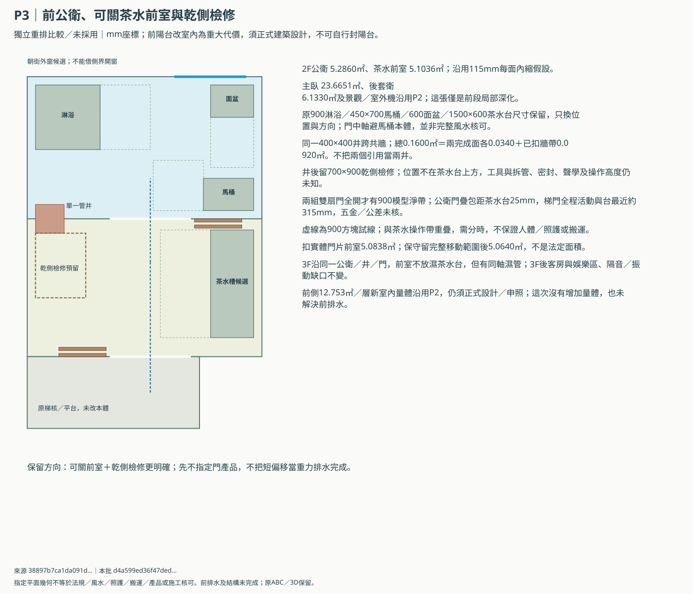
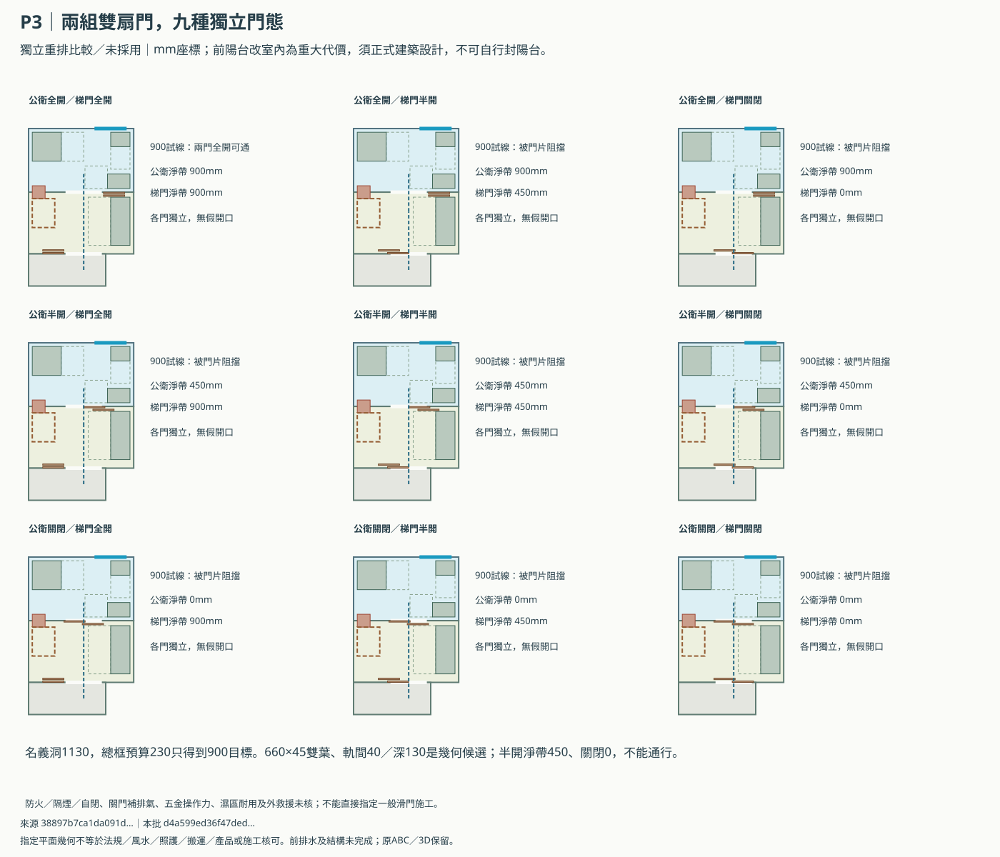
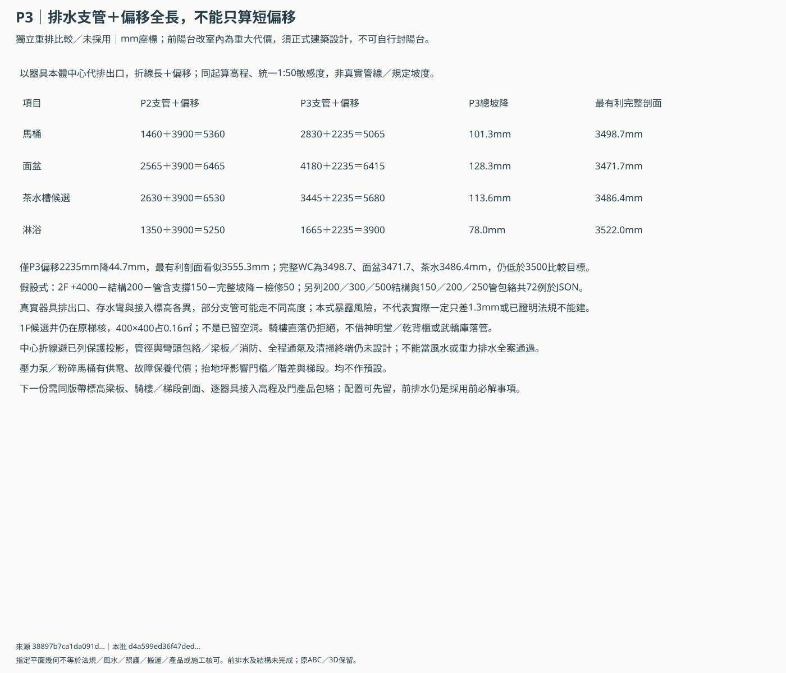

B棟P3：前公衛與茶水前室深化
獨立比較／未採用；P1／P2及原ABC／3D保留。前側室內量體、前排水與梯核仍未核。
P3讓乾側檢修及兩組可關門狀態明確，保指定模型面積與原尺寸；完整支管＋偏移仍未解除騎樓淨高及原梯核落水缺口，保留配置方向而不宣稱排水成立。
指定115mm模型面積
| 區域 | 扣井後㎡ |
|---|---|
| public-bath | 5.2860 |
| tea-foyer | 5.1036 |
| master | 23.6651 |
| private-bath | 6.1330 |
同一井0.16㎡＝兩完成面各0.034＋已扣牆帶0.092。前室扣實體門片5.0838㎡，保守留完整移動範圍後5.0640㎡；通行與茶水操作需分時。這不是法定面積或實測。
前段配置與乾側檢修


兩組門九態


完整排水與騎樓剖面敏感度


完整排水仍未成立：200結構／150管含支撐／50檢修的最有利假設，WC3498.7、面盆3471.7、茶水3486.4mm，低於3500比較目標。短偏移3555.3mm不能代完整管路。
交給建築／機電與門商的問題
- 前側每層新增12.753㎡室內輪廓沿用P2，須納入正式量體、結構及申照；不能沿用原陽台免計或自行封陽台。
- 同一400×400管井跨公衛／前室名義界線；實際牆厚、耐火／防水、管徑、通氣與支承尚未設計，管井不當無損可用面積。
- 700×900乾側檢修區、檢修門高度、清掃口密封與整管拆換包絡需原廠／機電圖；檢修口不朝茶水台上方。
- 兩組雙扇疊門的660×45葉片、40軌間距及230總框預算僅幾何候選；實際淨寬、把手、止擋、門框補強、操作力、濕區耐久與外救援未核。
- 樓梯／前室是否須防火、隔煙、自閉及合格門組由正式消防／建築設計決定；本候選門不能當防火門或關門後已通風。
- 短偏移不等於完整排水較短；器具中心折線只是同起算高程敏感度，真實排出口、彎頭、存水彎與立管接入標高尚缺。
- 最有利200結構＋150管含支撐＋50檢修假設，完整WC／面盆／茶水線仍低於3500比較目標，不能宣稱騎樓淨高已解決。
- 1F落水候選仍占原梯核0.16㎡；必須以實際梁板、梯段／平台、檢修與防火證明不縮樓梯、不擋騎樓，無證據不施工。
- 兩衛外窗仍只是朝街／後側合法外口候選；新風、2F／3F公衛各自獨排補氣、乾濕分區、防雨／隱私及所有出口需合圖。
- 完整支管與騎樓剖面表只核2F列明器具；3F支管、立管、2F匯流、通氣、同時流量與井內容量均未設計，不借2F敏感度當整棟排水完成。
- P1／P2、原ABC／3D、兩個1F入口各三態與屋頂均保留；3F娛樂僅14.3141㎡及上下層聲學／振動缺口仍在。